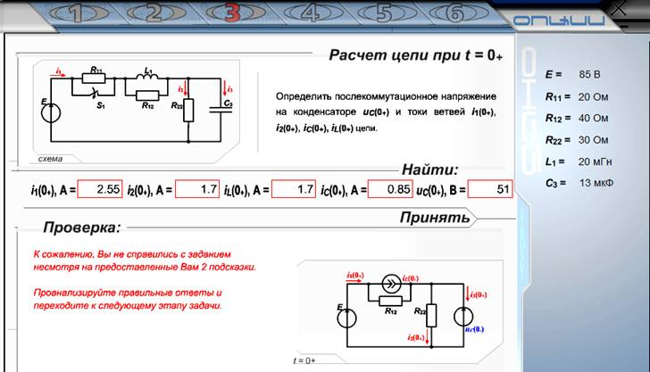

Рис. 1. Интерфейс страницы программы RPP-KM
Программа позволяет моделировать разветвленную
электрическую цепь с изменяемой топологией и значениями параметров элементов как
в автоматическом режиме, так и посредством ввода с клавиатуры параметров 'вручную'.
В отличие от профессиональных сред моделирования таких, как MatLab или NI Multisim, в которых имеются программы расчёта переходных процессов в электрических цепях, не раскрывающие механизмов и методов расчёта, а, следовательно, не обучающих студентов методам решения задачи, данная программа предоставляет возможность студентам самостоятельно рассчитать переходный процесс, проверяя и корректируя свои
действия на каждом этапе расчёта. При разработке программы за основу был взят
классический метод расчёта, поскольку он детально раскрывает процесс решения задачи, смысл и физические величины всех параметров, присутствующих в выражениях (формулах). Научившись рассчитывать переходный процесс классическим методом, пользователь усваивает природу переходных процессов, установившихся и свободных составляющих переходных величин, входящих в математические выражения, и тем самым ему легче будет освоить операторные методы анализа переходных процессов.
При запуске программы выбор одной из 16-ти принципиальных топологий схемы цепи и установка параметров её элементов осуществляется случайным образом. В программе также предусмотрена возможность вызова нужной схемы и ввода исходных данных с
клавиатуры для продолжения решения начатой ранее задачи.
Ввиду того, что программа RPP-KM носит, прежде всего, учебный характер, расчёт переходных процессов в ней разделен на 5 этапов, по окончании каждого из них нужно ввести результаты расчёта в выделенные активные поля (ячейки) для проверки правильности расчёта и щёлкнуть мышью на кнопке "Принять". После сравнения введенных значений с эталонными программа выводит на экран положительную оценку (при расхождениях данных не более, чем 5%) или выводит сообщение об ошибках (поля с неверными ответами обводятся
красными рамками) и подсказки. Рекомендуется вводить не менее трёх значащих цифр значений электрических величин при их записи в форме с плавающей запятой.
На выполнение каждого этапа задания в программе отводится 10...20 мин, остаток которого отображается в правом нижнем углу рабочего поля экрана. По истечении отведенного на решение этапа задания времени, а также после трёх вводов неверных ответов,
на экран выводятся эталоны (правильные ответы) и программа позволяет пользователю приступить к решению следующего этапа расчёта.
После выполнении 5-ти этапов расчёта программа (по команде) выводит на экран графики зависимостей переходных величин от времени с регулируемыми масштабами величин по осям координат. Данные для построения графиков формируются в соответствии со значениями, введенными пользователем на предыдущих этапах расчёта переходных процессов в цепи.